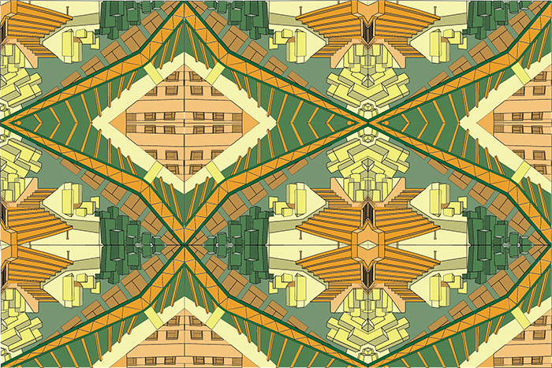

Portfolio
About

Here is a pattern I created during a design fundamentals class in 2022. The goal of the assignment was to use the architecture here at the University of San Francisco and create a pattern with several different images of the school.